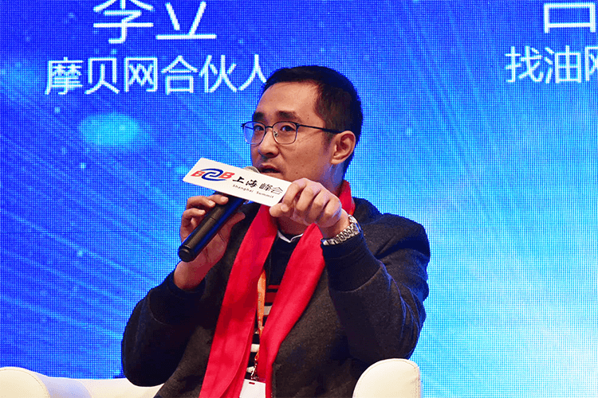

在托比网主办的“第三届B2B电子商务大会”上，吕健对托比网记者透露，找油网在2016年12月完成了1000万美元A+轮融资，本轮融资由雲九资本领投，云启资本和SIG跟投，资金将用于加深原有的江苏、浙江和广东三个区域的密度。

吕健表示，云九资本等投资方不仅提供资金支持，还会在找油网发展战略上提供帮助。2016年7月与投资方交流结束后，找油网采用了投资方对市场的研判与商业逻辑，果断深入下游，建立地推团队，很快挖掘出大量的终端刚需客户。
据托比网记者了解，找油网平台当前的业务模式分为批发撮合交易和终端油品服务两大类：批发撮合交易，包括撮合交易、资源代销和定金锁货锁价等；终端油品服务包括油品配送、客户油品加注及相关设备服务等。两种模式分别对应了成品油流通领域中的两大类客户群体，即油品贸易商和终端用油企业。
谈到找油网的发展，吕健介绍，2015年石油行业发生了很大变化，找油网从2015年6月到2016年6月，长达一年的时间里只做撮合，可以说是靠撮合起家，积累了大量贸易客户。但在与找塑料创始人牟斌进行交流时，牟斌对他表示，在当前市场情况下单靠撮合模式已经不太可能拿到融资。吕健认可了这一说法。
吕健认为，撮合模式需分品类，不是每个行业都适合。找油网与找钢网的不同之处在于做撮合做得比较重。在帮助客户对接资源后，平台根据客户需求提供了物流配送，物权凭证如提单（卡）配送以及增值税发票管理等等，也就是重服务。大量的撮合交易以及一揽子的后续服务，为找油网树立鲜明的品牌形象起到很大的作用，提高了市场知名度，吸引了更多的客户，但是撮合确实不是每个大宗平台都可以做的。
而关于终端油品服务，吕健解释道，找油网将提供面向小微客户的深化服务，虽说小微客户的客单价很小，但是客户数量庞大，达100万以上，例如小型工厂设备用油、物流车队车辆用油等等。目前，这一类客户主要在加油站加油，一是价格昂贵，二是客户体验一般，且加油站不能提供金融服务。找油网面向这些小微客户提供上门服务，提供加油优惠，并建立小微金融中心，满足客户需求。
提高用户体验是找油网一直以来都在强调的发展重点，也是其保障用户黏性的关键所在。吕健表示，柴油的SKU很少，经过一年多的实践，找油网已经积累的大量的客户。随着时代的发展，越来越多的企业客户对移动互联网的认识有所改观并开始接受。目前，找油网的柴油已经基本实现了APP在线交易，客户下单后可直接选择物流配送，优化了原本割裂的场景。优化移动端下订单乃至完成交易的流程，也是提高客户体验的一部分。
关于供应链金融方面，吕健表示，找油网选择引进专业化的金融公司做这块业务，让专业的公司做专业的事。目前，平台与找钢网孵化的胖猫宝合作，胖猫宝是面向钢铁石油行业的一个互联网金融平台，为找油网的一些客户提供了定制的金融服务。